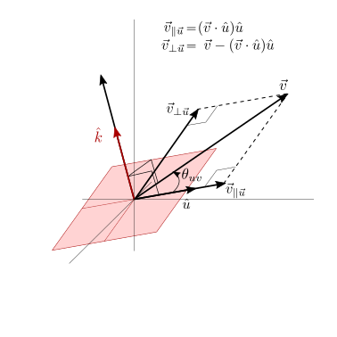
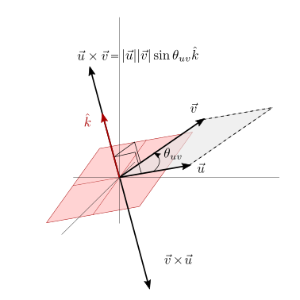
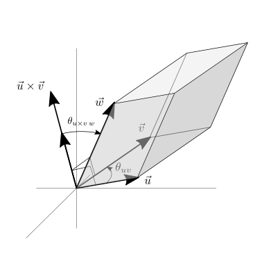

7.2. Spazio vettoriale euclideo#
Definizione di uno spazio vettoriale euclideo.
todo
7.2.1. Prodotto interno e distanza#
Uno spazio vettoriale euclideo può essere equipaggiato con un’operazione bilineare, simmetrica (su campi reali), e semi-definita positiva, definita prodotto interno,
che permette di definire la norma di un vettore e l’angolo tra due vettori
E” semplice verificare che la definizione di un prodotto interno induce la definizione di una norma. Infatti, calcolando il prodotto interno tra un vettore \(\vec{v}\) e se stesso, l’angolo compreso è l’angolo nullo, \(\theta_{\vec{v} \vec{v}} = 0\), con \(\cos \theta_{\vec{u}\vec{u}} = 0\).
Il prodotto scalare risulta utile anche nella definizione di operazioni di proiezione. Ad esempio, la proiezione ortogonale di un vettore \(\vec{v}\) lungo la direzione identificata dal vettore unitario \(\hat{u}\) è il vettore
che ha la stessa direzione di \(\hat{u}\) e modulo uguale alla proiezione ortogonale di \(\vec{v}\) su di esso, \(\hat{u} \cdot \vec{v}\). La proiezione del vettore \(\vec{v}\) in direzione ortogonale a quella indicata da \(\hat{u}\) si può ottenere per differenza e quindi
dove ci si è concessi la licenza poetica di introdurre nell’ultima riga il tensore di proiezione ortogonale in direzione perpendicolare a \(\hat{u}\),
rappresentazione astratta (vettoriale/tensoriale, che non dipende dalla scelta di una base vettoriale) della trasformazione già mostrata in algebra lineare todo aggiungere riferimento agli esercizi di algebra lineare sulle proiezioni
todo Discutere rappresentazione intrinseca/astratta/vettoriale e per coordinate.
7.2.2. Prodotto vettoriale#
Per lo spazio euclideo \(E^3\) è possibile definire anche un’operazione bilineare, antisimmetrica, definita prodotto vettoriale,
in modo tale da avere
con il vettore \(\hat{k}\) ortogonale a entrambi i vettori \(\vec{u}\), \(\vec{v}\) nella direzione definita dalla regola della mano destra todo
todo. E in \(E^2\)? A volte è comodo assumere che esista una dimensione aggiuntiva, e che quindi ci si trovi in \(E^3\). In questo caso, il prodotto vettore di due vettori di \(E^2\) è sempre ortogonale ad esso.
todo. Il prodotto vettoriale può essere visto come un caso particolare di un’operazione «strana» chiamata prodotto esterno
7.2.3. Prodotto misto#
Nello spazio euclideo \(E^3\) si può definire il prodotto misto tra 3 vettori, come il prodotto scalare di uno di questi e il prodotto vettore degli altri due
Il prodotto misto ha un significato geometrico evidente: il valore del proodotto misto di tre vettori è uguale al volume del parallelepipedo costruito con i tre vettori come spigolo.
 |
 |
 |
7.2.4. Base cartesiana#
In uno spazio vettoriale euclideo, \(E^3\), è possibile definire una base carteisana, \(\{ \hat{x}, \hat{y}, \hat{z} \}\), come un’insieme di vettori di norma unitaria e reciprocamente ortogonali,
e usando il prodotto vettore per definire l’orientazione dei 3 vettori,
Un vettore di uno spazio vettoriale può essere sempre scritto come combinazione lineare degli elementi di una base vettoriale,
Usando una base cartesiana, è immediato ricavare le coordinate cartesiane di un vettore \(\vec{v}\) come il prodotto interno del vettore \(\vec{v}\) per i vettori della base,
Usando una base cartesiana, si possono scrivere:
la somma di vettori e la moltiplicazione per uno scalare in componenti,
il prodotto interno in termini delle componenti cartesiane dei vettori
il prodotto vettoriale, in termini del determinante formale